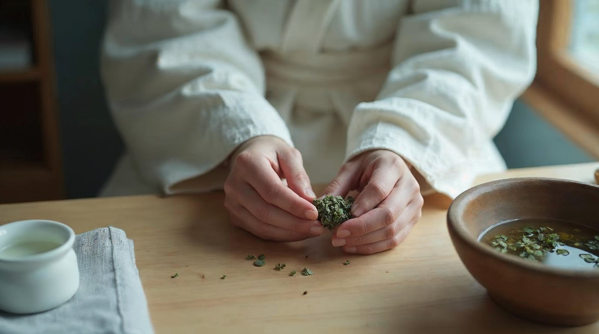

이종호 한의사 감수좋은꿈참사랑한의원 대표원장 (한의사 면허번호 19769)발행 2026-11-23 · 수정 2026-11-27
이 글의 차례
- 왜 이런 불편이 생길 수 있나요
- 왜 하필 일요일 저녁에 마음이 무거워질까요?
- 일요일 저녁의 걱정과 오래된 지침은 어떻게 다른가요?
- 일요일 저녁의 긴장은 몸에서 어떻게 나타나나요?
- 일이 바뀐 시기에 더 심해지기도 하나요?
- 이런 주말을 보내고 있지 않나요?
- 스스로 점검해 보세요
- 먼저 이렇게 여쭙니다
- 일상에서 먼저 해 볼 수 있는 것
- 주말 리듬은 어떻게 맞추면 좋을까요?
- 일요일 오후는 어떻게 보내면 좋을까요?
- 잠자리에서 걱정이 꼬리를 물 때는 어떻게 하나요?
- 주말의 커피와 술은 어떻게 조절할까요?
- 월요일 아침을 가볍게 시작하려면?
- 얼마나 지켜보고 언제 상담할까요?
- 한의원에서 함께 살필 수 있는 경우
- 한의원에서는 어떤 방법을 함께 고려하나요?
- 함께 사는 가족은 어떻게 도울 수 있나요?
- 이렇게 기록해 오시면 상담이 쉬워집니다
- 이런 증상은 먼저 확인이 필요합니다
일요일 저녁만 되면 출근 걱정에 가슴이 답답하고 잠이 안 온다면, 걱정이 무엇인지와 함께 주말의 생활 리듬부터 살펴봅니다. 주말에 늦잠을 자고 늦게 잠들면 일요일 밤에는 몸이 아직 잠들 준비가 안 된 경우가 많기 때문입니다. 일요일 오후부터 마음이 무거워지고, 월요일 아침에는 피곤한 채로 출근한다는 직장인이 많습니다.
왜 이런 불편이 생길 수 있나요
- 다가올 일을 미리 걱정하는 긴장이 일요일 저녁에 커지면 가슴 답답함과 두근거림으로 느껴질 수 있습니다.
- 주말에 평소보다 늦게 자고 늦게 일어나면 몸의 시계가 뒤로 밀려, 일요일 밤에 잠들기 어려워질 수 있습니다.
- 잠자리에서 업무 메신저를 확인하면 머리가 다시 일하는 상태로 돌아갑니다.
- 업무 부담이 오래 쌓였다면 일요일 저녁의 불편은 몸이 보내는 신호일 수 있어 함께 살핍니다.
왜 하필 일요일 저녁에 마음이 무거워질까요?
사람은 일이 실제로 닥쳤을 때보다 다가오는 것을 기다릴 때 더 크게 긴장하기도 합니다. 금요일 저녁에는 쉬는 날이 앞에 놓여 있지만, 일요일 해가 지면 다음 날 해야 할 일들이 한꺼번에 머릿속에 떠오릅니다. 이 미리 당겨 하는 걱정이 가슴 답답함으로 느껴지는 것입니다.
몸의 시계도 한몫합니다. 금요일과 토요일에 늦게 자고 늦게 일어나면, 일요일 밤 11시는 몸에게는 아직 저녁 9시쯤처럼 느껴질 수 있습니다. 졸리지 않은데 내일 일찍 일어나야 한다는 생각에 누우면, 잠이 안 오는 시간 동안 걱정이 더 커집니다.
주말 동안 쉬지 못하고 밀린 집안일이나 약속으로 바빴다면, 쉬었다는 느낌 없이 월요일을 맞는다는 허탈함도 더해집니다. 주말을 어떻게 보냈는지가 일요일 저녁의 마음에 생각보다 큰 영향을 줍니다.
일요일 저녁의 걱정과 오래된 지침은 어떻게 다른가요?
일요일 저녁에 마음이 무겁다가도 월요일 오전 일을 시작하고 나면 그럭저럭 하루가 흘러간다면, 미리 당겨 하는 걱정이 중심일 가능성이 큽니다. 이때는 주말 리듬을 손보는 것만으로도 부담이 꽤 줄어드는 경우가 많습니다.
반대로 월요일만이 아니라 평일 내내 출근길이 무겁고, 퇴근해도 지쳐서 아무것도 하기 싫은 날이 몇 달째 이어진다면 일의 부담이 오래 쌓인 지침일 수 있습니다. 주말에 쉬어도 기운이 돌아오지 않는다는 점이 차이입니다.
평일에도 잠들기 어렵고 이유 없이 불안한 날이 많다면, 일요일은 그 불안이 가장 도드라지는 날일 뿐일 수도 있습니다. 그래서 진료 때는 일요일만이 아니라 한 주 전체의 흐름을 함께 여쭙습니다.
일요일 저녁의 긴장은 몸에서 어떻게 나타나나요?
마음의 긴장은 몸 곳곳으로 나타납니다. 가장 흔한 것은 명치가 막힌 듯 답답하고 숨을 깊게 들이쉬기 어려운 느낌입니다. 저녁을 먹고 나서 속이 더부룩하거나 입맛이 뚝 떨어지는 분도 많습니다.
어깨가 귀 쪽으로 올라가 있고 목 뒤가 뻣뻣해지는 것도 자주 듣는 이야기입니다. 자는 동안 이를 꽉 물어 월요일 아침 턱이 뻐근하고 관자놀이가 아픈 분도 있습니다. 가슴이 두근거려 누워서도 심장 소리가 크게 들린다고 하시기도 합니다.
이런 몸의 변화가 일요일 저녁마다 비슷한 시각에 찾아온다면, 몸이 다가올 한 주를 미리 버티려고 힘을 주고 있는 것입니다. 이 흐름을 알아차리는 것만으로도 '내 몸에 큰일이 생긴 건 아닐까' 하는 불안이 조금 줄어듭니다.
일이 바뀐 시기에 더 심해지기도 하나요?
네, 그런 경우가 많습니다. 예를 들어 부서를 옮긴 지 얼마 안 되었거나, 새 상사와 일하게 되었거나, 큰 발표나 마감이 다음 주에 잡혀 있을 때 일요일 저녁의 답답함이 커졌다는 분이 많습니다.
입사한 지 얼마 안 된 분은 아직 일이 손에 익지 않아 월요일이 더 크게 느껴지고, 연말 평가나 인사 시기에는 경력이 오래된 분도 같은 부담을 겪습니다. 이럴 때는 증상이 언제부터 시작되었는지와 일의 변화를 나란히 적어 보면 연결 고리가 보이기도 합니다.
일의 변화는 바꿀 수 없더라도, 그 시기만큼은 주말 리듬을 더 단단히 지키고 잠을 우선으로 두는 것이 몸을 버티게 하는 방법입니다.
이런 주말을 보내고 있지 않나요?
- 예를 들어 토요일 오후 1시에 일어나 하루가 짧게 느껴지는 경우
- 예를 들어 일요일 오후 내내 소파에서 영상만 보다가 저녁에 갑자기 허무해지는 경우
- 예를 들어 일요일 밤 10시에 업무 메신저 알림을 보고 나서 잠이 달아나는 경우
- 예를 들어 일요일 저녁 식사 뒤부터 속이 더부룩하고 입맛이 없는 경우
- 예를 들어 월요일 아침 알람을 여러 번 끄고 겨우 일어나 머리가 띵한 채 출근하는 경우
이런 주말이 몇 주 이어지면 일요일 저녁의 불편이 습관처럼 굳어집니다. 몸이 '일요일 밤은 원래 잠이 안 오는 날'이라고 기억해 버리기 전에, 주말의 흐름을 조금씩 바꿔 보는 것이 좋습니다. 하나만 바꿔도 다음 일요일 밤이 달라질 수 있고, 어디서부터 바꿀지는 진료 때 함께 정해도 됩니다.
스스로 점검해 보세요
- 주말 기상 시각이 평일보다 두 시간 넘게 늦다
- 일요일 오후 늦게 낮잠을 길게 잔다
- 일요일 저녁부터 가슴이 답답하거나 속이 불편하다
- 일요일 밤 잠드는 데 30분 넘게 걸린다
- 잠자리에서 다음 주 일정을 떠올리며 뒤척인다
- 월요일 아침 두통이나 피로가 다른 요일보다 심하다
- 주말에 쉬었는데도 쉰 느낌이 없다
세 가지 넘게 해당한다면 주말 리듬부터 함께 살펴볼 만합니다. 해당하는 항목을 적어 오시면 어디서부터 바꿀지 정하기 쉽습니다.
먼저 이렇게 여쭙니다
- 일요일 몇 시쯤부터 마음이 무거워지나요?
- 주말에 늦잠을 많이 주무시나요?
- 걱정은 주로 어떤 내용인가요?
- 월요일 아침 몸 상태는 어떤가요?
- 평일에도 잠들기 어려운 날이 있나요?
첫 방문에서는 맥을 짚으며 지금 몸이 얼마나 긴장해 있는지를 봅니다. 가슴 답답함이 어떤 느낌인지, 숨을 깊게 쉬기 어려운지, 속이 함께 불편한지, 어깨와 목이 굳어 있는지도 하나씩 확인합니다.
일의 내용을 자세히 말씀하지 않으셔도 됩니다. 어떤 요일, 어떤 시각에 마음이 무거워지는지, 그때 몸에서 무엇이 달라지는지를 중심으로 여쭙고, 이야기 나누기 편한 만큼만 걱정의 내용을 들려주시면 됩니다.
일상에서 먼저 해 볼 수 있는 것
- 주말에도 일어나는 시각을 평일과 한 시간 안쪽으로 맞추기
- 일요일 오후에 다음 주 할 일을 짧게 정리하고 덮어 두기
- 일요일 저녁에는 가벼운 산책하기
- 잠들기 전 업무 메신저 확인하지 않기
- 월요일 아침에 기다려지는 작은 일을 하나 정해 두기
주말 리듬은 어떻게 맞추면 좋을까요?
가장 먼저 바꿔 볼 것은 토요일 아침입니다. 금요일 밤에 늦게 자더라도 토요일 기상은 평일보다 한 시간 안쪽으로 늦추세요. 부족한 잠은 오후 이른 시간에 20~30분 낮잠으로 채우면 몸의 시계가 크게 밀리지 않습니다.
일요일 오후 4시 이후의 긴 낮잠은 밤잠을 밀어냅니다. 졸리다면 가볍게 밖에 나가 걷거나 샤워를 하며 버텨 보세요. 일요일 저녁 식사는 평소보다 조금 이르고 가볍게, 술과 진한 커피는 피하시길 권합니다.
주말에 꼭 하나는 '쉬었다'고 느낄 만한 일을 넣어 두세요. 좋아하는 산책길을 걷거나, 미뤄 둔 책을 읽는 것처럼 일과 상관없는 일이면 됩니다. 이 기억이 있으면 일요일 저녁의 허탈함이 한결 덜합니다.
일요일 오후는 어떻게 보내면 좋을까요?
일요일 오후 3시쯤 15분만 시간을 내어 다음 주 할 일을 적어 보세요. 길게 계획을 세울 필요는 없고, 월요일 오전에 할 첫 일 하나만 정해도 충분합니다. 적은 뒤에는 노트를 덮고 업무 생각은 거기서 멈추기로 정해 두세요.
해가 지기 전에 바깥에서 20~30분 걷는 시간을 넣어 보세요. 몸을 움직이면 긴장이 풀리고, 낮의 빛을 받아 두면 밤에 잠드는 데도 도움이 됩니다. 집 근처 공원이나 강변처럼 좋아하는 길이면 더 좋습니다.
저녁에는 따뜻한 물로 샤워하거나 족욕을 하고, 조명을 조금 낮춰 몸에 밤이 왔다는 신호를 주세요. 일요일 밤에 일부러 새로운 드라마를 시작하면 늦게까지 보게 되기 쉬워, 짧게 끝나는 것을 고르시길 권합니다.
잠자리에서 걱정이 꼬리를 물 때는 어떻게 하나요?
걱정을 머릿속에 담아 둔 채 누우면 생각이 계속 돕니다. 잠들기 한두 시간 전에 종이에 걱정되는 일과 그 일에 대해 내일 할 수 있는 첫 행동을 한 줄씩 적고 덮어 두세요. 적은 것은 내일의 내가 처리할 일이라고 정해 두는 것입니다.
누워서는 숨을 천천히 길게 내쉬는 데 집중해 보세요. 넷에 들이쉬고 여섯에 내쉬기를 반복하면 어깨와 가슴에 들어간 힘이 조금씩 빠집니다. 휴대폰은 손이 닿지 않는 곳에 두고, 알람은 시계로 맞추는 것도 방법입니다.
주말의 커피와 술은 어떻게 조절할까요?
주말에 늦게 일어나 오후에 첫 커피를 마시면, 그 각성이 밤까지 이어져 일요일 밤 잠을 방해할 수 있습니다. 일요일만큼은 커피를 오후 2시 이전에 마치는 것을 권합니다.
일요일 저녁의 반주나 맥주 한 캔으로 긴장을 풀려는 분도 있습니다. 술은 처음에는 잠이 오게 하는 것처럼 느껴지지만 새벽에 자주 깨게 하고 잠을 얕게 만들어, 월요일 아침을 더 무겁게 할 수 있습니다. 일요일은 술 없이 지내는 날로 정해 보세요.
월요일 아침을 가볍게 시작하려면?
월요일 아침에는 일어나자마자 커튼을 걷고 밝은 빛을 보세요. 물 한 잔을 마시고 가볍게 몸을 늘리는 것만으로도 머리가 맑아지는 데 도움이 됩니다. 아침을 거르면 오전 내내 처지기 쉬워, 간단하게라도 드시길 권합니다.
출근해서는 가장 부담스러운 일보다 15분 안에 끝낼 수 있는 일부터 시작해 보세요. 작은 일을 하나 마치면 하루의 흐름이 생기고, 일요일 밤에 크게 느껴졌던 걱정이 생각보다 다룰 만하다는 것을 확인하게 됩니다.
얼마나 지켜보고 언제 상담할까요?
주말 기상 시각을 맞추고 일요일 저녁 습관을 바꾼 뒤 3~4주 정도 지켜보세요. 일요일 밤 잠드는 시간이 조금씩 줄고 월요일 아침이 덜 무겁다면 방향이 맞는 것입니다.
리듬을 바꿨는데도 가슴 답답함과 잠 문제가 그대로이거나, 평일에도 걱정 때문에 잠을 설치는 날이 늘어난다면 진료를 받아 보세요.

한의원에서 함께 살필 수 있는 경우
- 주말 끝마다 잠이 늦어지는 경우 잠의 모양과 생활 리듬을 함께 살핍니다.
- 출근 걱정으로 가슴 답답함이나 소화 불편이 오는 경우 긴장 정도와 소화를 함께 살핍니다.
- 월요일마다 두통이나 피로가 심한 경우 몸의 긴장을 함께 살핍니다.
좋은꿈참사랑한의원에서는 맥부터 짚으며 일주일의 생활 리듬과 걱정이 커지는 때를 여쭙고, 몸의 긴장을 살핍니다. 그다음 침, 한약 상담, 잠과 생활 리듬 조정 가운데 상태에 맞는 방법을 정합니다. 토·일·공휴일에도 오후 3시까지 진료해 주말에 오셔서 이야기를 나누실 수 있습니다.
한의원에서는 어떤 방법을 함께 고려하나요?
긴장으로 어깨와 목이 굳고 머리가 무거운 분이라면 침으로 몸의 뭉침을 풀어 주는 것을 먼저 고려합니다. 몸의 긴장이 조금 풀리면 일요일 밤에 누웠을 때 힘을 빼기가 한결 수월해지는 분이 많습니다.
잠이 얕고 소화가 함께 흔들리는 분, 쉬어도 기운이 돌아오지 않는 분이라면 한약 상담을 함께 고려합니다. 이때는 드시는 약과 영양제, 커피와 술의 양까지 여쭙고 나서 필요한지부터 판단합니다.
어떤 방법이든 생활 리듬을 함께 손보지 않으면 다시 같은 자리로 돌아가기 쉽습니다. 그래서 진료와 함께 다음 주말에 해 볼 한두 가지를 꼭 정해 드립니다.
함께 사는 가족은 어떻게 도울 수 있나요?
일요일 저녁에 말수가 줄고 예민해지는 가족이 있다면, 왜 그러냐고 묻기보다 저녁 산책을 함께 나가자고 권해 보세요. 함께 걷는 것만으로도 긴장이 풀리고, 이야기를 꺼내기도 쉬워집니다.
일요일 밤에는 집안 분위기를 조금 차분하게 해 주는 것도 도움이 됩니다. 늦은 시간 TV 소리를 줄이고, 다음 주 일정 이야기는 낮 시간에 미리 나누는 식입니다.
이렇게 기록해 오시면 상담이 쉬워집니다
- 2주 동안의 잠든 시각과 일어난 시각(주말 포함)
- 일요일 마음이 무거워지기 시작한 시각
- 월요일 아침의 몸 상태(두통, 피로, 소화)
- 복용 중인 약
기록은 일요일 밤과 월요일 아침 두 번만 적어도 충분합니다. 일요일에는 '답답함 시작 시각, 잠든 시각', 월요일에는 '일어난 시각, 머리·속 상태'를 한 줄로 적어 보세요. 몇 주 모이면 어떤 주말 뒤에 일요일 밤이 편했는지가 보입니다.
이런 증상은 먼저 확인이 필요합니다
- 가슴 답답함과 함께 가슴 통증이나 숨참이 있는 경우
- 스스로를 해칠 생각이 들면 ☎ 109로 바로 연락하세요.
이런 신호가 있으면 한의원보다 가까운 병원이나 응급실을 먼저 찾으세요.

여쭙는 것
- 일요일 몇 시쯤부터 마음이 무거워지나요?
- 주말에 늦잠을 많이 주무시나요?
- 걱정은 주로 어떤 내용인가요?
생활에서 해 볼 것
- 주말에도 일어나는 시각을 평일과 한 시간 안쪽으로 맞추기
- 일요일 오후에 다음 주 할 일을 짧게 정리하고 덮어 두기
- 일요일 저녁에는 가벼운 산책하기
한의원에서 함께 살필 것
- 주말 끝마다 잠이 늦어지는 경우 잠의 모양과 생활 리듬을 함께 살핍니다.
- 출근 걱정으로 가슴 답답함이나 소화 불편이 오는 경우 긴장 정도와 소화를 함께 살핍…
- 월요일마다 두통이나 피로가 심한 경우 몸의 긴장을 함께 살핍니다.
먼저 확인이 필요한 신호
- 가슴 답답함과 함께 가슴 통증이나 숨참이 있는 경우
- 스스로를 해칠 생각이 들면 109로 바로 연락하세요.
한눈에 보는 표
| 구분 | 핵심 |
|---|---|
| 여쭙는 것 | 일요일 몇 시쯤부터 마음이 무거워지나요? 주말에 늦잠을 많이 주무시나요? |
| 생활에서 해 볼 것 | 주말에도 일어나는 시각을 평일과 한 시간 안쪽으로 맞추기 일요일 오후에 다음 주 할 일을 짧게 정리하고 덮어 두기 |
| 한의원에서 함께 살필 것 | 주말 끝마다 잠이 늦어지는 경우 잠의 모양과 생활 리듬을 함께 살핍니다. 출근 걱정으로 가슴 답답함이나 소화 불편이 오는 경우 긴장 정도와 소화를 함께 살핍니다. |
| 먼저 확인이 필요한 신호 | 가슴 답답함과 함께 가슴 통증이나 숨참이 있는 경우 스스로를 해칠 생각이 들면 109로 바로 연락하세요. |
자주 묻는 질문
주말 진료도 되나요?
토·일·공휴일 09:30~15:00에 진료합니다.
회사 일정 때문에 자주 못 가면 어떻게 하나요?
가능한 일정을 알려 주시면 그에 맞춰 함께 정합니다.
일요일 밤에 잠이 안 오면 누워 있어야 하나요?
20분쯤 지나도 잠이 오지 않으면 잠시 일어나 어두운 곳에서 조용히 있다가 졸릴 때 다시 눕는 방법을 권합니다.
진료 시간은 어떻게 되나요?
좋은꿈참사랑한의원은 평일 09:30~20:00(점심 13:00~14:00), 토·일·공휴일 09:30~15:00에 진료합니다.
좋은꿈참사랑한의원은 재진 때 지난번 이야기부터 이어서 여쭙니다. 진료시간과 예약은 오시는 길에서 확인하세요.
어디서 상담받을 수 있나요?
좋은꿈참사랑한의원은 서울 동작구 만양로2길 2 신성빌딩 3층·5층(서울 동작구 상도동, 7호선 상도역 3번 출구 근처)에 있습니다. 한의사 3명(이종호 대표원장, 조영기 수석진료원장, 정원영 진료원장)이 진료합니다. 진료시간은 평일 09:30~20:00(점심 13:00~14:00), 토·일·공휴일 09:30~15:00이며, 방문 전 전화로 확인을 권합니다. 예약은 네이버 예약, 카카오톡 상담, 전화 02-815-7510로 받습니다.
이 글은 일반적인 건강 정보이며 개인의 진단이나 치료를 대신하지 않습니다. 증상이 있거나 복용 중인 약이 있다면 진료를 통해 확인하세요. 치료 효과는 개인마다 다를 수 있습니다.
작성 기준: 일반적으로 알려져 있는 건강 정보를 참고해 정리했습니다(대표원장 감수). 증상 기록은 1~2주 동안 하루 1회, 비슷한 시간에 적어 오시면 지난 상태와 비교하기 쉽습니다.